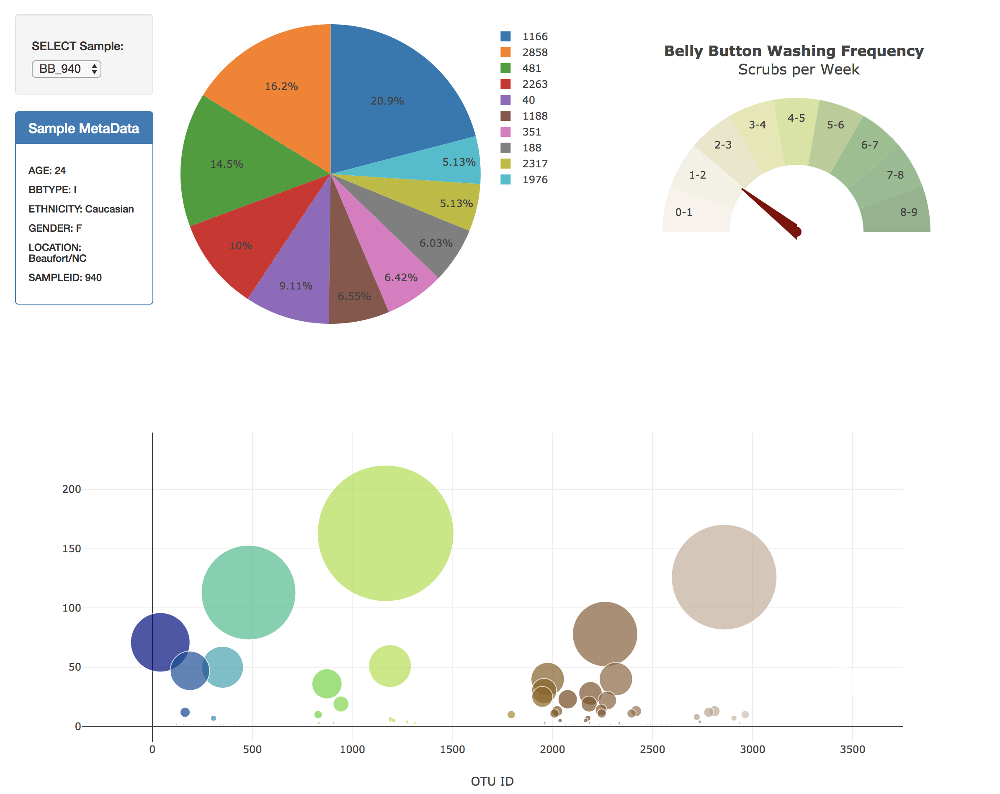

In this project, you will explore an interactive dashboard to explore the Belly Button Biodiversity DataSet. please click here to visit the deployed website. To visit the project page on github click here.

via GIPHY
In this project a scatter plot was created to show the correlation between Education (Bachelors And Higher) and Income. please click here to visit the deployed website. To visit the project page on github click here.
In this project a LeafLet map was created usning JavaScript, 3D and geoJson dataset to be updated every 5 min from USGS GeoJSON Feed to map seismic activities around the world. please click here to visit the deployed website. To visit the project page on github click here.